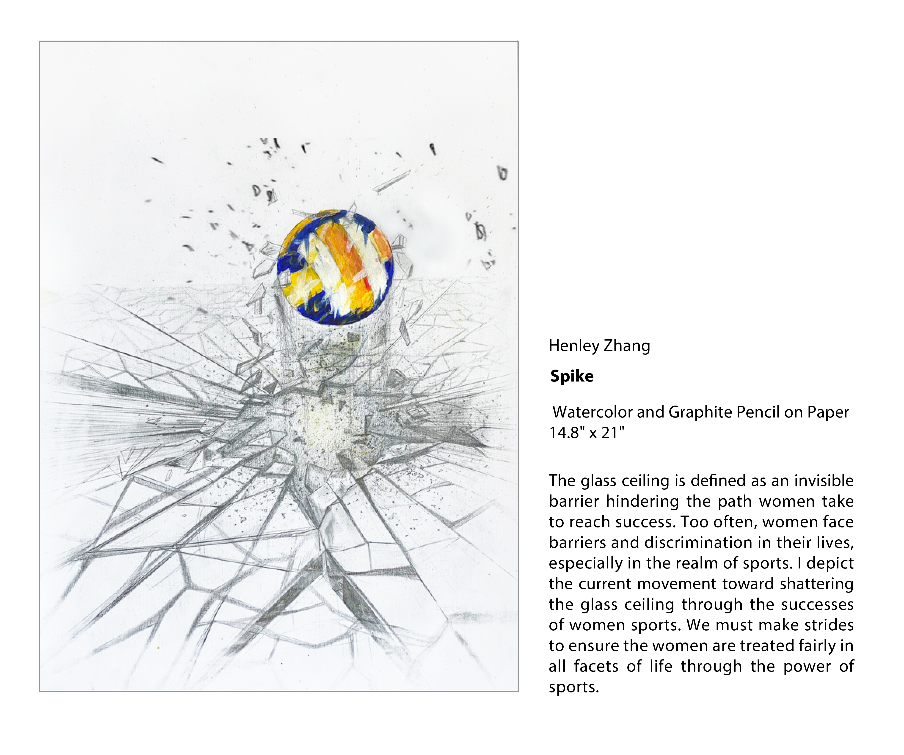
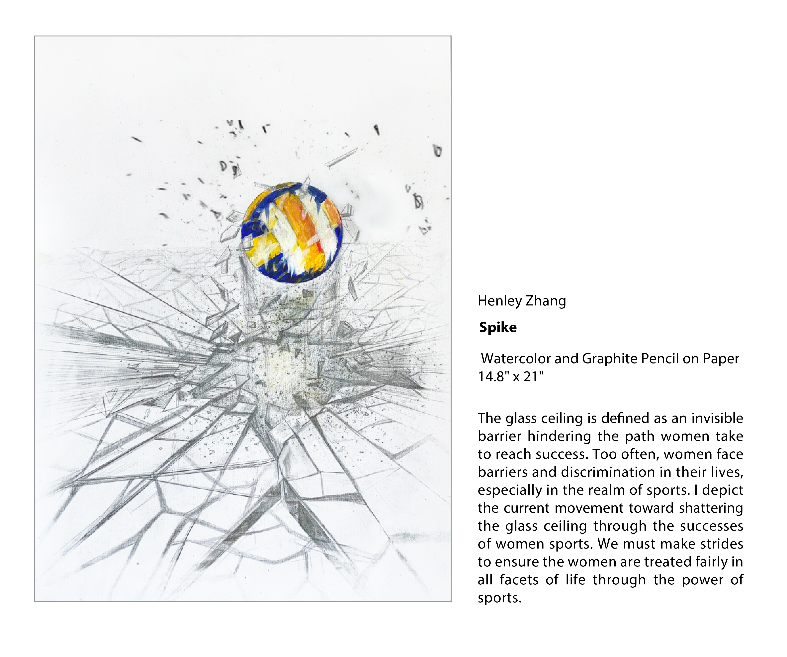

Arts


 



Animal Crossing kept me sane during peak covid. I painted a 16 by 24 inch amiibo card of isabelle. It even works as one since I embeded a nfc chip. Lol
I hate abstract paintings since I believed it was a waste of paint. I created this abstract painting entriely out of waste paints that I would have rinsed away, built up over the course of a year. This is the only painting still in progress.